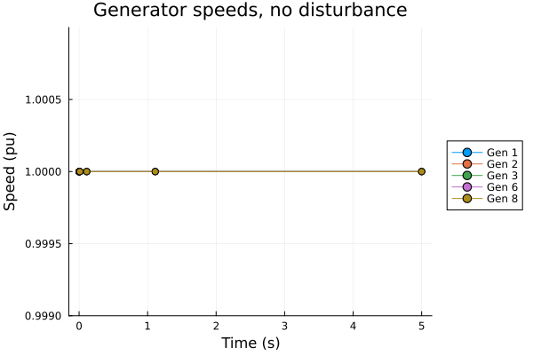

TDS Initialization Validation
Learn how to check the initial conditions of a time-domain simulation (TDS) and diagnose steady-state problems before simulating.
Setup
using Powerful
using PowerfulCases
using Plots
# Reporting helpers from the TDS package (not exported by Powerful)
using PowerfulTDS: write_validation_report, print_initialization_summaryWhy Validation Matters
A time-domain simulation starts from a steady-state operating point. If the initial conditions do not satisfy the differential-algebraic equations (DAE), that is the differential residuals f = 0 and the algebraic residuals g = 0, the simulation starts with a spurious transient before any disturbance is applied.
Common causes:
- Dynamic model data inconsistent with the power flow data
- Incorrect initial states of a dynamic model
Approach: evaluate the residuals at t = 0 before time stepping.
1. Load System and Solve Power Flow
# IEEE 14-bus case with its default dynamic data
case = load("ieee14")
sys_pf = SystemModel(parse_network(case.raw))
# The power flow solution is the steady state the dynamic models start from
sol_pf = solve(ACPowerFlowProblem(sys_pf), Newton())
println("Power flow converged: ", sol_pf.converged)
println("Iterations: ", sol_pf.iterations)Power flow converged: true
Iterations: 42. Load Dynamic Models
parse_dynamics reads a PSS/E DYR file and links each generator model to the power flow generator (Slack or PV) at the same bus and ID. The default IEEE 14-bus DYR file contains classical machines (GENCLS), exciters (SEXS) and governors (TGOV1).
dyr_data = parse_dynamics(case.dyr, sys_pf)
for (model, data) in pairs(dyr_data)
println("$model: $(length(data)) instances")
endTGOV1: 5 instances
GENCLS: 5 instances
SEXS: 5 instances3. Initialize and Create the TDS Problem
setup_tds replaces the static generators with their dynamic models and computes the initial states and setpoints from the power flow solution.
init = setup_tds(sol_pf, dyr_data)TDSInitialization:
TGOV1 (5): LAG_y, LL_x, pref, pout
GENCLS (5): delta, omega, E_q, P_m
SEXS (5): LL_x, LAW_y, vref, E_fd
Setpoints: TGOV1, GENCLS, SEXSprob = TDSProblem(init; tspan=(0.0, 5.0))TDSProblem{Float64, PowerInjection}:
Time span: 0.0 → 5.0 s
State variables: 30
Algebraic variables: 58
Events: 0
Dynamic models: GENCLS, SEXS, TGOV1
4. Validate Initialization
Evaluate all residuals at t = 0 and compare them with a tolerance.
result = validate_tds_initialization(prob; atol=1e-6)
println("Valid: ", result.is_valid)
println("Max differential residual: ", result.max_diff_residual)
println("Max algebraic residual: ", result.max_alg_residual)Valid: true
Max differential residual: 1.942890293094024e-14
Max algebraic residual: 3.255784530864503e-125. Validation Report
The report lists the equations whose residuals exceed the tolerance.
print_validation_report(result)
======================================================================
TDS Initialization Validation Report
======================================================================
✓ All residuals within tolerance
Max differential residual: 1.94e-14
Max algebraic residual: 3.26e-126. Understanding Residuals
Differential residuals (f): time derivatives of the state variables (for example the rotor angle δ and speed ω). At steady state they are zero; a non-zero value means the state starts moving without any disturbance.
Algebraic residuals (g): network equations such as the power balance at each bus. They must be zero at all times; a non-zero value means a mismatch between the dynamic model injections and the network.
7. What a Failed Validation Looks Like
To see the diagnostics, we build a second problem whose initial rotor angle of the generator at bus 1 is shifted by 0.05 rad away from its computed steady-state value.
init_bad = setup_tds(sol_pf, dyr_data)
init_bad.dyn.GENCLS.delta[1] += 0.05
prob_bad = TDSProblem(init_bad; tspan=(0.0, 5.0))
result_bad = validate_tds_initialization(prob_bad; atol=1e-6)
print_validation_report(result_bad)
======================================================================
TDS Initialization Validation Report
======================================================================
✗ Non-zero residuals detected!
Max differential residual: 2.19e-01
Max algebraic residual: 2.19e-01
Differential Residuals (f != 0):
----------------------------------------------------------------------
┌─────────┬────────┬──────────┬───────────────┐
│ Address │ Model │ Equation │ Residual │
├─────────┼────────┼──────────┼───────────────┤
│ 16 │ GENCLS │ domega │ -2.194330e-01 │
└─────────┴────────┴──────────┴───────────────┘
Algebraic Residuals (g != 0):
----------------------------------------------------------------------
┌─────────┬───────┬──────────┬───────────────┐
│ Address │ Model │ Equation │ Residual │
├─────────┼───────┼──────────┼───────────────┤
│ 1 │ Bus │ p │ 2.194330e-01 │
│ 15 │ Bus │ q │ -4.634440e-02 │
└─────────┴───────┴──────────┴───────────────┘
======================================================================The report points at the equations involved: the speed equation of the shifted machine and the active and reactive power balance at its terminal bus. This point is not a steady state. solve runs the same check before simulating, reports the violations as an error, and the integrator then refuses to start from it.
8. Save the Validation Report
write_validation_report writes the same report to a text file, for example to attach to a bug report. Here it goes to a temporary directory.
report_path = joinpath(mktempdir(), "validation_report.txt")
write_validation_report(result_bad, report_path)
print(read(report_path, String))Validation report written to /tmp/jl_x5A4id/validation_report.txt
======================================================================
TDS Initialization Validation Report
======================================================================
✗ Non-zero residuals detected!
Max differential residual: 2.19e-01
Max algebraic residual: 2.19e-01
Differential Residuals (f != 0):
----------------------------------------------------------------------
┌─────────┬────────┬──────────┬───────────────┐
│ Address │ Model │ Equation │ Residual │
├─────────┼────────┼──────────┼───────────────┤
│ 16 │ GENCLS │ domega │ -2.194330e-01 │
└─────────┴────────┴──────────┴───────────────┘
Algebraic Residuals (g != 0):
----------------------------------------------------------------------
┌─────────┬───────┬──────────┬───────────────┐
│ Address │ Model │ Equation │ Residual │
├─────────┼───────┼──────────┼───────────────┤
│ 1 │ Bus │ p │ 2.194330e-01 │
│ 15 │ Bus │ q │ -4.634440e-02 │
└─────────┴───────┴──────────┴───────────────┘
======================================================================9. Inspect Initial States
print_initialization_summary prints the computed initial states of every dynamic model.
print_initialization_summary(prob)
======================================================================
TDS Initialization Summary
======================================================================
TGOV1: 5 instances
----------------------------------------------------------------------
┌─────┬────┬──────────┬──────────┬──────────┬──────────┐
│ BUS │ ID │ LAG_y │ LL_x │ pref │ pout │
├─────┼────┼──────────┼──────────┼──────────┼──────────┤
│ 1 │ 1 │ 0.816978 │ 0.816978 │ 0.040849 │ 0.816978 │
│ 2 │ 1 │ 0.400000 │ 0.400000 │ 0.020000 │ 0.400000 │
│ 3 │ 1 │ 0.400000 │ 0.400000 │ 0.020000 │ 0.400000 │
│ 6 │ 1 │ 0.300000 │ 0.300000 │ 0.015000 │ 0.300000 │
│ 8 │ 1 │ 0.350000 │ 0.350000 │ 0.017500 │ 0.350000 │
└─────┴────┴──────────┴──────────┴──────────┴──────────┘
GENCLS: 5 instances
----------------------------------------------------------------------
┌─────┬────┬───────────┬──────────┬──────────┬──────────┐
│ BUS │ ID │ delta │ omega │ E_q │ P_m │
├─────┼────┼───────────┼──────────┼──────────┼──────────┤
│ 1 │ 1 │ 0.183142 │ 1.000000 │ 1.001714 │ 0.816978 │
│ 2 │ 1 │ 0.016060 │ 1.000000 │ 1.075702 │ 0.400000 │
│ 3 │ 1 │ -0.011976 │ 1.000000 │ 1.031263 │ 0.400000 │
│ 6 │ 1 │ -0.085246 │ 1.000000 │ 1.076080 │ 0.300000 │
│ 8 │ 1 │ 0.016928 │ 1.000000 │ 1.050482 │ 0.350000 │
└─────┴────┴───────────┴──────────┴──────────┴──────────┘
SEXS: 5 instances
----------------------------------------------------------------------
┌─────┬────┬──────────┬──────────┬──────────┬──────────┐
│ BUS │ ID │ LL_x │ LAW_y │ vref │ E_fd │
├─────┼────┼──────────┼──────────┼──────────┼──────────┤
│ 1 │ 1 │ 0.010017 │ 1.001714 │ 1.040017 │ 1.001714 │
│ 2 │ 1 │ 0.010757 │ 1.075702 │ 1.040757 │ 1.075702 │
│ 3 │ 1 │ 0.010313 │ 1.031263 │ 1.020313 │ 1.031263 │
│ 6 │ 1 │ 0.010761 │ 1.076080 │ 1.040761 │ 1.076080 │
│ 8 │ 1 │ 0.010505 │ 1.050482 │ 1.040505 │ 1.050482 │
└─────┴────┴──────────┴──────────┴──────────┴──────────┘
======================================================================Show only selected instances. Keys are (BUS, ID) tuples; models not listed in keys are shown in full.
print_initialization_summary(prob; keys = Dict(:GENCLS => [(1, "1"), (2, "1")]))
======================================================================
TDS Initialization Summary
======================================================================
TGOV1: 5 instances
----------------------------------------------------------------------
┌─────┬────┬──────────┬──────────┬──────────┬──────────┐
│ BUS │ ID │ LAG_y │ LL_x │ pref │ pout │
├─────┼────┼──────────┼──────────┼──────────┼──────────┤
│ 1 │ 1 │ 0.816978 │ 0.816978 │ 0.040849 │ 0.816978 │
│ 2 │ 1 │ 0.400000 │ 0.400000 │ 0.020000 │ 0.400000 │
│ 3 │ 1 │ 0.400000 │ 0.400000 │ 0.020000 │ 0.400000 │
│ 6 │ 1 │ 0.300000 │ 0.300000 │ 0.015000 │ 0.300000 │
│ 8 │ 1 │ 0.350000 │ 0.350000 │ 0.017500 │ 0.350000 │
└─────┴────┴──────────┴──────────┴──────────┴──────────┘
GENCLS: 2 instances
----------------------------------------------------------------------
┌─────┬────┬──────────┬──────────┬──────────┬──────────┐
│ BUS │ ID │ delta │ omega │ E_q │ P_m │
├─────┼────┼──────────┼──────────┼──────────┼──────────┤
│ 1 │ 1 │ 0.183142 │ 1.000000 │ 1.001714 │ 0.816978 │
│ 2 │ 1 │ 0.016060 │ 1.000000 │ 1.075702 │ 0.400000 │
└─────┴────┴──────────┴──────────┴──────────┴──────────┘
SEXS: 5 instances
----------------------------------------------------------------------
┌─────┬────┬──────────┬──────────┬──────────┬──────────┐
│ BUS │ ID │ LL_x │ LAW_y │ vref │ E_fd │
├─────┼────┼──────────┼──────────┼──────────┼──────────┤
│ 1 │ 1 │ 0.010017 │ 1.001714 │ 1.040017 │ 1.001714 │
│ 2 │ 1 │ 0.010757 │ 1.075702 │ 1.040757 │ 1.075702 │
│ 3 │ 1 │ 0.010313 │ 1.031263 │ 1.020313 │ 1.031263 │
│ 6 │ 1 │ 0.010761 │ 1.076080 │ 1.040761 │ 1.076080 │
│ 8 │ 1 │ 0.010505 │ 1.050482 │ 1.040505 │ 1.050482 │
└─────┴────┴──────────┴──────────┴──────────┴──────────┘
======================================================================Show only selected variables, including the electrical power output (P_e, Q_e), which requires evaluating the model equations:
print_initialization_summary(prob; vars = [:delta, :omega, :P_e, :Q_e], include_observable_vars = true)
======================================================================
TDS Initialization Summary
======================================================================
TGOV1: 5 instances
----------------------------------------------------------------------
┌─────┬────┐
│ BUS │ ID │
├─────┼────┤
│ 1 │ 1 │
│ 2 │ 1 │
│ 3 │ 1 │
│ 6 │ 1 │
│ 8 │ 1 │
└─────┴────┘
GENCLS: 5 instances
----------------------------------------------------------------------
┌─────┬────┬───────────┬──────────┬──────────┬───────────┐
│ BUS │ ID │ delta │ omega │ P_e │ Q_e │
├─────┼────┼───────────┼──────────┼──────────┼───────────┤
│ 1 │ 1 │ 0.183142 │ 1.000000 │ 0.816978 │ -0.201692 │
│ 2 │ 1 │ 0.016060 │ 1.000000 │ 0.400000 │ 0.352707 │
│ 3 │ 1 │ -0.011976 │ 1.000000 │ 0.400000 │ 0.155205 │
│ 6 │ 1 │ -0.085246 │ 1.000000 │ 0.300000 │ 0.390645 │
│ 8 │ 1 │ 0.016928 │ 1.000000 │ 0.350000 │ 0.169009 │
└─────┴────┴───────────┴──────────┴──────────┴───────────┘
SEXS: 5 instances
----------------------------------------------------------------------
┌─────┬────┐
│ BUS │ ID │
├─────┼────┤
│ 1 │ 1 │
│ 2 │ 1 │
│ 3 │ 1 │
│ 6 │ 1 │
│ 8 │ 1 │
└─────┴────┘
======================================================================10. System Composition After Replacement
The dynamic generator models replace the static Slack and PV models, which have no instances left in the TDS system.
for (model_name, data) in pairs(prob.sys.models)
println(" $model_name: $(length(data))")
end PV: 0
Owner: 2
Branch: 16
AreaInterchange: 2
Transformer2W: 4
Bus: 14
PQ: 11
Slack: 0
Zone: 2
TGOV1: 5
GENCLS: 5
SEXS: 511. Confirm with a Short Simulation
With a valid initialization and no disturbance, the system stays at its operating point: the generator speeds remain at 1.0 pu.
sol_tds = solve(prob)
gen_keys = collect(zip(prob.sys.models.GENCLS.BUS, prob.sys.models.GENCLS.ID))
max_dev = maximum(maximum(abs.(get_series(sol_tds, :GENCLS, :omega, key)[2] .- 1)) for key in gen_keys)
println("Max |ω - 1| over all generators and time steps: ", max_dev)Max |ω - 1| over all generators and time steps: 2.5424107263916085e-14plot(xlabel="Time (s)", ylabel="Speed (pu)", ylims=(0.999, 1.001),
title="Generator speeds, no disturbance", legend=:outerright)
for (bus, id) in gen_keys
t, ω = get_series(sol_tds, :GENCLS, :omega, (bus, id))
plot!(t, ω, label="Gen $bus", marker=:circle)
end
plot!()
Summary
- Validate the TDS initialization before running simulations
- Use
validate_tds_initialization(prob)to check the residuals at t = 0 - Use
print_validation_reportto find the equations that are not satisfied - Use
print_initialization_summaryto inspect the initial states
Next steps: see the Time-Domain Simulation guide for disturbances (faults, line trips) and result analysis.